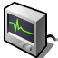

 ActivityMonitor (Монітор активності)
| Deskbar: | ||
| Розташування: | /boot/system/apps/ActivityMonitor | |
| Налаштування: | ~/config/settings/ActivityMonitor settings |
Запустивши Монітор активності та активуючи різні об’єкти у контекстному меню програми, Ви можете відстежувати системні ресурси, які Вас цікавлять.
Правий клік миші на вікні відображення графіків відкриє контекстне меню, в якому можна підключити/відключити моніторинг різноманітних елементів системи. Ці елементи візуалізуються графіками, які показують споживання різного роду системних ресурсів:
Використана пам'ять, Файловий кеш, Розмір файлу підкачки, Використання CPU, Отримано/Відправлено по мережі, Відмови сторінки, Семафори, Порти, Потоки, Процеси, Запущені програми, Буфер обміну Raw/Text, Вузли Медіа.
Під вікном відображення графіків розміщується легенда з підписом даних (її можна приховати з контекстного меню). Фон вікна та графіки можна розфарбувати за своїм вподобанням, якщо перетягнути колір з будь-якої панелі кольорів іншої програми, наприклад, Icon-O-Matic.
За допомогою пункту меню , Ви можете відкрити більше вікон з графіками, якщо поточні вікна стануть занадто переповненими.
Пункт меню відкриває панель для встановлення , тобто швидкості оновлення даних для графіків. Ви також можете використовувати коліщатко миші на графіку, щоб тимчасово змінити швидкість.
Кожне вікно графіків разом з легендою і підписом даних створюють групу, яка має власний маркер репліканта, що дає можливість розмістити таку групу на Робочому столі.